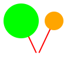
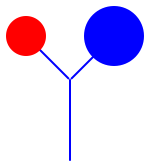
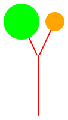
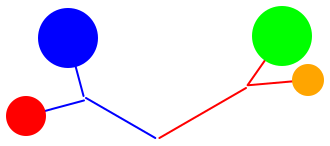
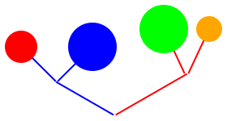

Assignment 3: Designing methods for complex data; Practice with accumulators
Goals: Learn to use the String class, practice working with lists. Learn to design methods for complex class hierarchies.
1 Instructions
This assignment is long. Start early.
the names of classes,
the names and types of the fields within classes,
the names, types and order of the arguments to the constructor,
the names, types and order of arguments to methods, or
filenames,
Make sure you follow the style guidelines that Bottlenose enforces. For now the most important ones are: using spaces instead of tabs, indenting by 2 characters, following the naming conventions (data type names start with a capital letter, names of fields and methods start with a lower case letter), and having spaces before curly braces.
You will submit this assignment by the deadline using the Bottlenose submission system. You may submit as many times as you wish. Be aware of the fact that close to the deadline the system may have a long queue of submissions which means it takes longer for your code to be submitted - so try to finish early.
The submission will be organized as follows:
Homework 3 Problem 1: The RoadTrip.java file
Homework 3 Problem 2: The ITrees.java file
Homework 3 Problem 3: The Media.java file
Problem 1 – Thursday, January 31st, 11:00pm
Problem 2 – Thursday, January 31st, 11:00pm
Problem 3 – Thursday, January 31st, 11:00pm
Problem 1: Road Trip!
Give sufficient examples of data, and sufficient tests, to test your methods thoroughly.
If you find yourself wanting to use a field-of-field, stop. Fill out the template for each method, and figure out another design.
Think carefully about how to use dynamic dispatch, and where to define methods, to keep your code as simple and clean as possible.
In this problem, you’re going to help two drivers on a RoadTrip. Every road trip has two drivers, driver1 and driver2, as well as directions, which is a list of Direction. A Direction has a description, and a number of miles. For example, if a direction had the description "make a U-turn" and the number of miles was 20, it would mean that in 20 miles, the driver should make a U-turn. Also, for simplicity’s sake, miles will always be measured with whole numbers in this assignment.
The issue our drivers are facing is that the road trip might be very long, so they want to split up the road trip by changing who is in the driver’s seat every 10 (or 15, or 20, or whatever the given number is) miles. The number of miles is always guaranteed to be positive and a whole number, but those are the only assumptions that can be made about the number. Also, note that driver1 should always be the first driver on the road trip.
Design a method splitUpTrip that transforms a road trip into a list of road trip chunks, based on the given number of miles the drivers want to switch-off. A RoadTripChunk has a driver as well as directions, which is a list of Direction.
Make a left at Alberquerque, 13
Make a right at the fork, 2
Make a left at the next fork, 3
Take the overpass, 45
Destination on left, 12
Make a left at Alberquerque, 13
Make a right at the fork, 2
Switch with Henry, 0
Make a left at the next fork, 3
Switch with Hazel, 12
Switch with Henry, 15
Switch with Hazel, 15
Take the overpass, 3
Destination on left, 12
Note that the drivers have to be informed how long to drive until they need to switch, so those instructions need to become new directions in the list of road trip chunks where appropriate.
Hint: you will certainly need to use at least one accumulator parameter in at least one helper method. There are several valid designs for this problem; work through a wish-list process to figure out what helpers you might want.
Hint: When it comes to naming interfaces and classes for lists, be sure to follow our naming convention, or our tests won’t be able to run properly.
Hint: If you find yourself needing to reverse the order of lists (not all implementations will), it is best to reverse everything at the end once so you don’t need to keep track of whether or not directions and/or road trip chunks are in order as you go.
Hint: Make sure you understand the entire given example. Work through it on paper or a whiteboard until each step of the output is clear.
Hint: When a direction is too long for the current driver to finish, it effectively becomes two directions: the direction to switch drivers when their driving is up, and the original direction minus the distance already travelled. When writing your methods, think carefully about how these "new" directions play into the recursive structure of your code, and what list of directions you want to recur on.
Problem 2: Drawing trees
In this assignment, you will be drawing and working with trees.
interface ITree { /* see methods below */ } class Leaf implements ITree { int size; // represents the radius of the leaf Color color; // the color to draw it } class Stem implements ITree { // How long this stick is int length; // The angle (in degrees) of this stem, relative to the +x axis double theta; // The rest of the tree ITree tree; } class Branch implements ITree { // How long the left and right branches are int leftLength; int rightLength; // The angle (in degrees) of the two branches, relative to the +x axis, double leftTheta; double rightTheta; // The remaining parts of the tree ITree left; ITree right; }
A Stem at an angle of 90 degrees is growing straight up; a Branch with a left angle of 135 degrees and a right angle of 45 degrees points on both upward diagonals. (Leaves don’t need angles, since we can just approximate them with circles.)
Design the method WorldImage draw(), that renders your ITree to a picture. Draw all branches and stems using LineImages (this will make the coordinate manipulations easier than if you use rectangles) of whatever color you choose. You will almost certainly want to work with pinholes in your images: read the quick-start guide below, and the documentation for more information.
You do not have to write extensive tests for this method, but you should write at least some simple sanity checks. See below for more information about getting started with the image library. We will not write automated tests for this method, but will grade it manually.
Design the method boolean isDrooping(), that computes whether any of the twigs in the tree (either stems or branches) are pointing downward rather than upward.
Design the method ITree combine(int leftLength, int rightLength double leftTheta, double rightTheta, ITree otherTree). This method takes the current tree and a given tree and produces a Branch using the given arguments, with this tree on the left and the given tree on the right... but with a twist, literally.
Here are two trees, with the stems and branches drawn in different colors so we can keep them apart:
TREE1 = new Branch(30, 30, 135, 40, new Leaf(10, Color.RED), new Leaf(15, Color.BLUE))
TREE2 = new Branch(30, 30, 115, 65, new Leaf(15, Color.GREEN), new Leaf(8, Color.ORANGE))

If we attach each of them to stems growing at 90 degrees (i.e., straight up), we get:
new Stem(40, 90, TREE1)

new Stem(50, 90, TREE2)

Now suppose we want to attach those two stems to form a branch, with the left branch at 150 degrees and the right branch at 30 degrees (for example). We would get
TREE1.combine(40, 50, 150, 30, TREE2)

Your method should implement this combination step. Note that this result is different from simply placing both trees in a branch directly:
new Branch(40, 50, 150, 30, TREE1, TREE2)

You can deduce why this is from the interpretations of the various fields in the data definitions above, and design helper methods to implement the desired behavior accordingly.
Design the method double getWidth() that returns the width of the tree. Assume that leaves are drawn as circles, and their size is used as their radius. Reminder: given a length $l$ and an angle $\theta$ in radians, the x-coordinate is $l \cos\theta$, and you can compute cosines using Math.cos. Note: because Math.cos returns a double, but Posns require ints, you’ll need to coerce the returned cosine value to an int, like this: ((int)Math.cos(whatever...)). I personally always use the extra parentheses around the outside; they’re not always necessary, but they’re often clearer to read this way.
Using the javalib library
The javalib library provides the support for the design of interactive games and creating images composed by combining geometric shapes as well as image files. See The Image Library for more information.
To use the library, download the javalib file above and add it to your project the same way you have added the tester library.
At the top of the .java file where the library is used, add the following import statements:
import tester.*; // The tester library import javalib.worldimages.*; // images, like RectangleImage or OverlayImages import javalib.funworld.*; // the abstract World class and the big-bang library import java.awt.Color; // general colors (as triples of red,green,blue values) // and predefined colors (Color.RED, Color.GRAY, etc.)
boolean testImages(Tester t) { return t.checkExpect(new RectangleImage(30, 20, OutlineMode.SOLID, Color.GRAY), new RectangleImage(30, 20, OutlineMode.SOLID, Color.GRAY)); }
boolean testFailure(Tester t) { return t.checkExpect( new ScaleImageXY(new RectangleImage(60, 40, OutlineMode.SOLID, Color.GRAY), 0.5, 0.25), new RectangleImage(30, 15, OutlineMode.SOLID, Color.GRAY)); }
Finally, you can display your images so that you can see whether you’re on the right track, as follows:
boolean testDrawTree(Tester t) { WorldCanvas c = new WorldCanvas(500, 500); WorldScene s = new WorldScene(500, 500); return c.drawScene(s.placeImageXY(myTree.draw(), 250, 250)) && c.show(); }
See The Image Library for more information.
Problem 3: Abstracting over Data Definitions
In this problem, our data will represent different kinds of media. Each piece of media has a title and list of available languages for captions. Different kinds of media can also contain additional information as shown in the supplied Media.java file.
Note: none of these methods are properly implemented. As given in the file, they are all stubs that currently return a dummy value, so the code will compile but not yet work.
Warmup: Download the file and work out the following problems:
Make at least two examples of data for each of the three classes.
Design the isReallyOld method for each class. TV and YouTube are fairly modern formats, but movies that came out before 1930 are considered really old.
Design the method isCaptionAvailable for each class, which determines if a given language is available for captions.
Design the method format which produces a String showing the proper way to display the piece of media in text. Movies are formatted by the title followed by the year in parentheses, such as "The Favourite (2018)". TV episodes are formatted by the show’s title followed by the season and episode number, separated by a period, followed by a dash and then the episode title, such as "Mad Men 1.1 - Smoke Gets In Your Eyes". YouTube videos are formatted by the video’s title followed by the word by followed by the channel name, such as "Threw It On The Ground by thelonelyisland".
Once you have finished these methods and are confident that they work properly, save the work you have done to a separate file. Do not submit the code as written so far. The problems below are the main point of this exercise, and it will be helpful for you to preserve the code written so far as a reference against which to compare your revised code below. Again, submit only the work below.
Look at the code and identify all places where the code repeats —
the opportunity for abstraction. Lift the common fields to an abstract class AMedia, which should implement IMedia.
Make sure you include a constructor in the abstract class, and change the constructors in the derived classes accordingly. Run the program and make sure all test cases work as before.
For each method that is defined in all three classes decide to which category it belongs:
The method bodies in the different classes are all different, and so the method has to be declared as abstract in the abstract class.
The method bodies are the same in all classes and it can be implemented concretely in the abstract class.
The method bodies are the same for two of the classes, but are different in one class —
therefore we can define the common body in the abstract class and override it in only one derived class.
Now, lift the methods that can be lifted and run all tests again.